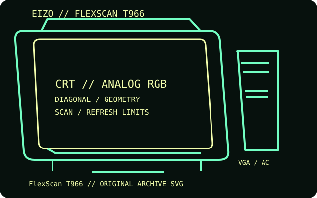

[ INDIVIDUAL COMPONENT // DISPLAYS ]
EIZO FlexScan T966
A large-format 21-inch-class color CRT designed for high-resolution workstation and graphics use.

IDENTIFICATION: Match the complete model and regional suffix on the rear label. Published CRT timing limits do not guarantee a particular used unit's condition; verify the tested host, cable and displayed mode.
Specifications
| Catalog subcategory | CRT displays |
|---|---|
| Exact product / family | EIZO FlexScan T966 |
| Tube diagonal & image geometry | 21-inch CRT diagonal, approximately 20-inch viewable area; 0.25 mm tension-mask/aperture-grille pitch, 4:3 screen. The OSD provides image size, position and geometry correction. |
| Resolution & refresh | Maximum 2048 × 1536; the manual recommends 1600 × 1200 for normal high-resolution use. Horizontal scan range 30–130 kHz; vertical range 50–160 Hz. |
| Video inputs | One 15-pin mini D-sub analog input and one five-BNC RGB input; analog RGB with separate/composite sync or sync-on-green, selected from the input controls. |
| Power | 100–120 V / 200–240 V AC, 50/60 Hz; about 160 W normal consumption and up to 200 W with the optional speaker. PowerManager modes are below 10 W and below 3 W. |
| Host compatibility | Compatible with PC and workstation video cards that output analog RGB at a supported scan timing. Use VGA for a standard analog connection or BNC for discrete RGB/sync; digital-only hosts require an active converter. |
Identification and compatibility notes
Maximum resolution is not a promise of a flicker-free mode at every rate. Confirm the exact timing against the EIZO specification and host video-card bandwidth.
Record the rear-label model, regional voltage rating, video connector used, source timing, adapter chain, visible image area and geometry/convergence condition. CRTs contain hazardous high-voltage circuits and heavy components; internal service belongs to qualified technicians.
Manufacturer documentation and sources
- EIZO — FlexScan T966 technical specificationsModel-specific technical data and supported timing ranges.
- EIZO — FlexScan T966 user manual, specifications sectionManual page covering electrical and display specifications.